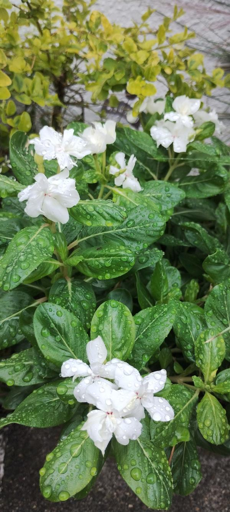

GitHub Page
Gravity
ナデシコ（ギザギザの縁取り） おはようございます。 たぶんナデシコ（セキチク）です。 地面に近いところで、目の覚めるような鮮やかなピンク色の花が咲いていました。五枚の花びらは大きく開き、その縁はまるで工作用のハサミで切り取ったように、細かくギザギザしています。中心には濃い模様があり、白いひげのような雄しべがちょこんと顔を出していました。 葉は細長く尖っていて、深い緑色をしています。少し触れてみると意外に硬く、カサカサとした感触がありました。地面を覆うように低い位置で咲いているため、しゃがみこんで見つめていると、花の鮮やかさが視界いっぱいに広がってきます。どこか懐かしいような、それでいてきりっとした表情を持った花でした。 ――― この花びらの特徴的なギザギザは、洋裁で使う「ピンキングはさみ（ギザギザに切るはさみ）」の語源になったともいわれています。英語でナデシコを「ピンク（Pink）」と呼びますが、もともとは「突き刺す」「ギザギザにする」という意味の言葉が先にあり、そこから花の名前に、そして後に色の名前へと広がっていったのだそうです。 色の名前としてあまりに有名な「ピンク」ですが、そのルーツがこの花の「形」にあったとは意外です。かわいらしさの中に、切れ味のよい刃物のような名前を秘めている。そう思って改めて花びらの縁を眺めると、そのギザギザがいっそう際立って見えてきました。 今回の話題: 花びらの形と言葉の由来 #ナデシコ #セキチク #ギザギザの花弁 #ピンクの語源 #足もとの花 #ふと見かけた植物
xxx

デイリー・ピックアップ
voicy001
voicy002
voicy003
voicy004
voicy005
voicy006
voicy007
voicy008
voicy009
voicy010
voicy011
voicy012
voicy013
voicy014
voicy015
voicy016
voicy017
voicy018
voicy019
voicy020